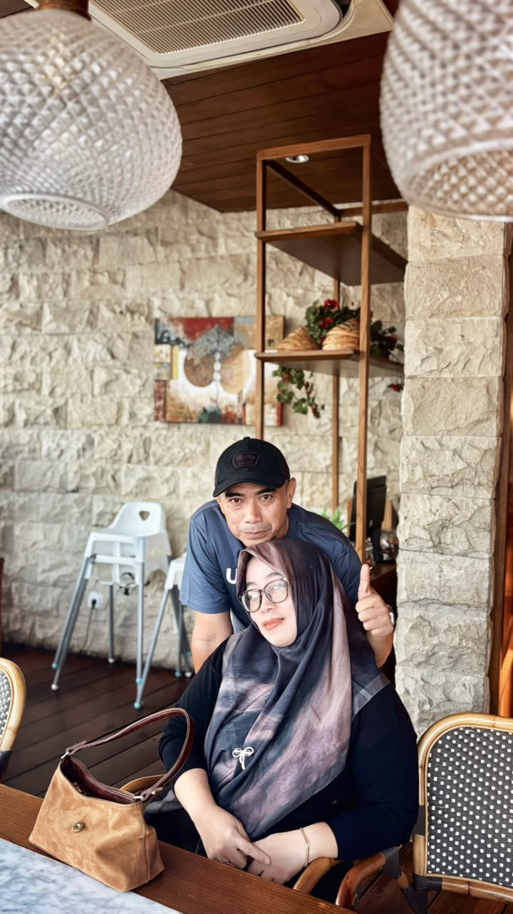
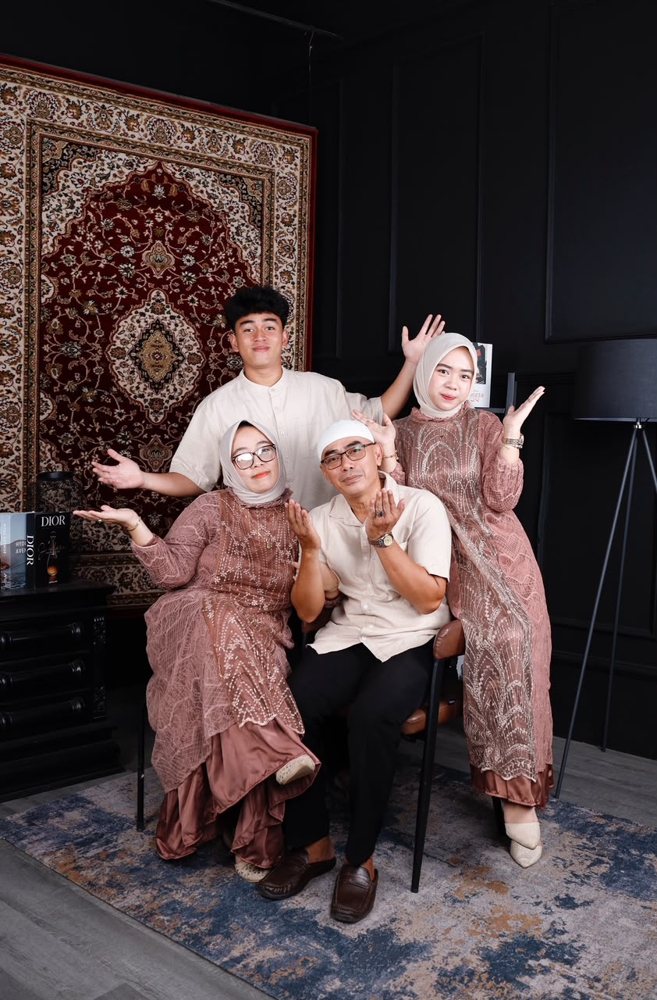
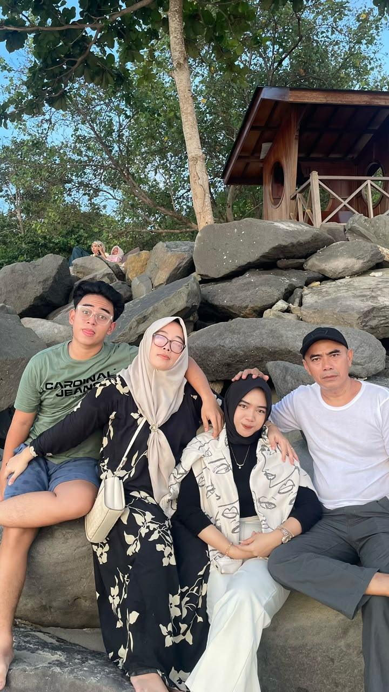
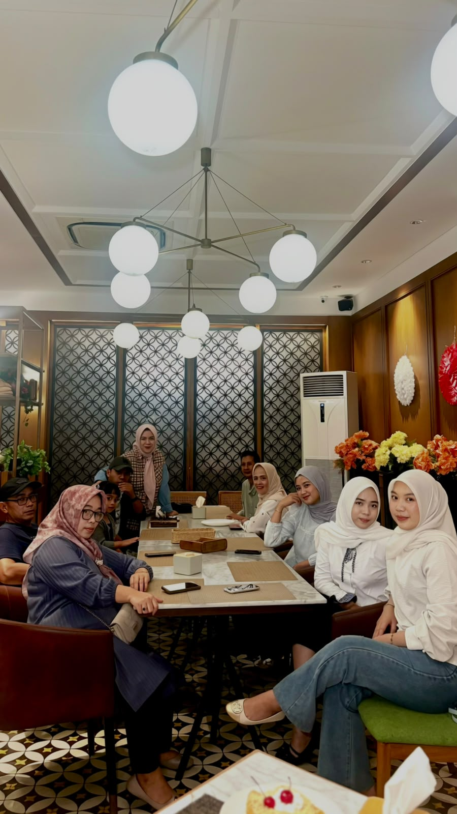
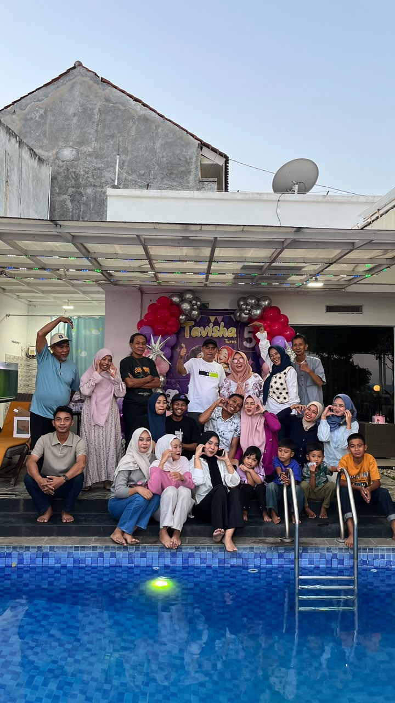
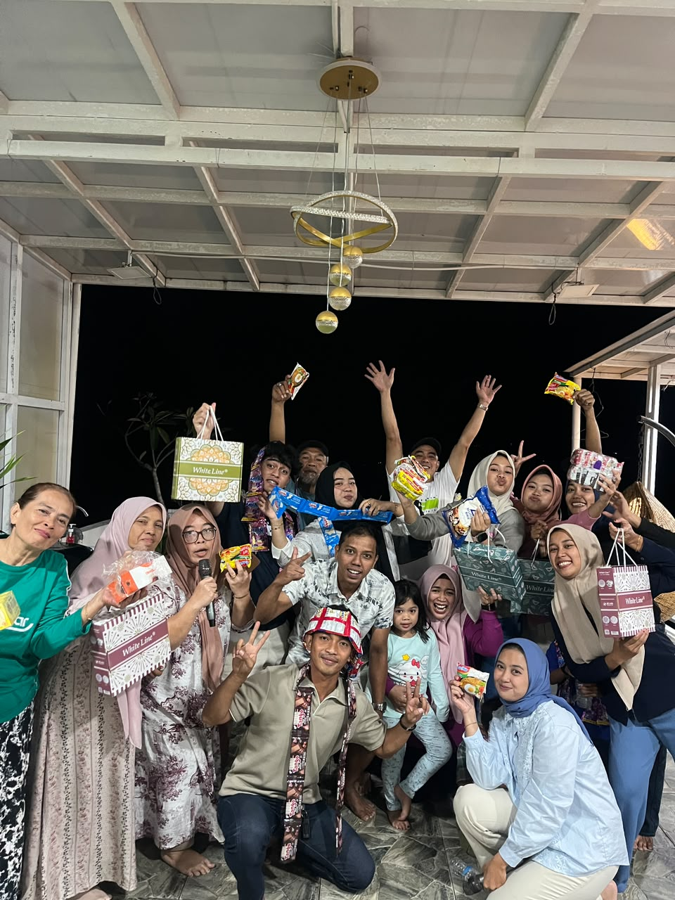

Tempat saya menemukan cinta, dukungan, dan rasa syukur ♡
Dua sosok yang sangat berarti dalam hidup saya.

Orang tua merupakan sosok yang sangat berarti dalam perjalanan hidup saya. Dari mereka, saya belajar tentang perjuangan, ketulusan, kesabaran, dan kasih sayang. Mereka selalu berusaha memberikan yang terbaik untuk saya dan menjadi salah satu sumber kekuatan saya dalam menjalani kehidupan.
Lima foto kenangan bersama orang-orang tersayang.

Kebersamaan sederhana yang selalu istimewa.

Momen indah yang ingin selalu saya kenang.

Bersama keluarga besar yang penuh cerita.

Bahagia karena dapat berkumpul bersama.

Setiap pertemuan menyimpan cerita tersendiri.
Berikut merupakan foto orang tua dan keluarga saya. Mereka adalah orang-orang yang paling saya syukuri kehadirannya dalam hidup saya. Bukan hanya orang tua dari keluarga kecil saya, tetapi juga keluarga besar yang selalu hadir dengan kasih sayang dan dukungan.
Saya memang tidak terlahir dari keluarga yang kaya, tetapi karena mereka, saya tidak pernah merasa kekurangan. Bukan hanya dalam hal finansial, tetapi juga dalam kasih sayang, perhatian, dan cinta. Mereka selalu berusaha memberikan yang terbaik untuk saya, bahkan ketika keadaan tidak selalu mudah. Saya merasa sangat beruntung bisa tumbuh di tengah keluarga yang mengajarkan saya arti perjuangan, rasa syukur, dan ketulusan. Bagi saya, memiliki mereka adalah salah satu kekayaan terbesar dalam hidup saya.